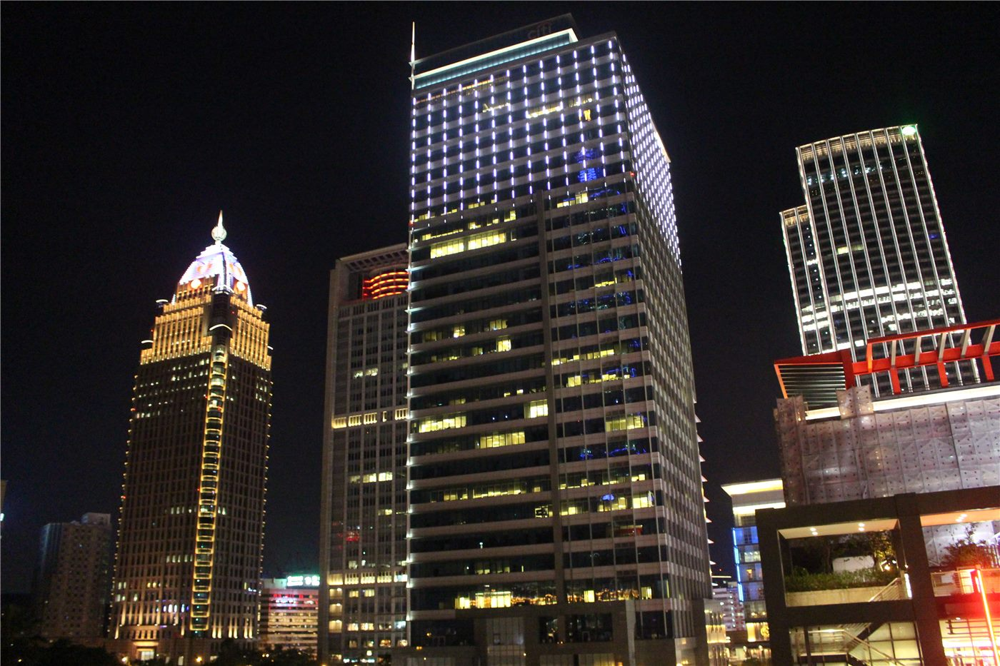

대만 증시 장중 1,300포인트 진폭… 융자유지율 147%로 1년 만에 최저
대만 가권지수가 장중 1,300포인트가 넘는 큰 폭의 등락을 보였다. 신용융자 유지율이 147%까지 떨어지며 1년 만에 최저를 기록했다.
진태흥 기자 · 2026.07.20
橋대만

대만 증시가 장중 1,300포인트 이상 출렁였고, 융자유지율이 147%로 근 1년 만에 최저 수준으로 떨어졌다고 연합보가 전했다. 융자유지율은 빚을 내 주식을 산 투자자의 담보 여력을 보여 주는 지표로, 낮을수록 반대매매 위험이 커진다.
광고 문의 · 300×250전문가들은 지수가 계절선(분기 이동평균선)까지 되밀린 국면에서, 다두(상승) 구조가 훼손되는지 여부가 향후 방향을 가를 핵심 변수라고 진단한다. 미·이란 충돌과 국제유가 급등이 위험자산 회피 심리를 키운 것이 배경이다.
융자유지율이 낮아지면 담보 부족 계좌의 강제 청산이 늘어 하락을 부추길 수 있어, 신용거래 비중이 큰 투자자일수록 변동성 관리가 중요해진다.
華橋時報는 개별 매매를 권하지 않는다. 다만 대만 증시의 급변은 반도체 공급망으로 얽힌 역내 경제 전반에 파장을 미치며, 한국·대만·중화권을 잇는 화인 투자자에게도 시사하는 바가 크다.
출처·참고 (사실 확인용 — 본문은 직접 재작성)
· 聯合報
· 聯合報